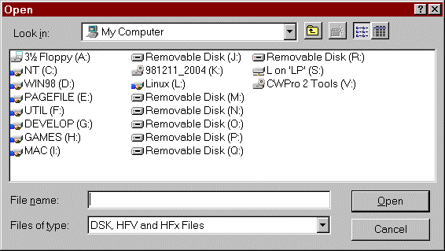

[ Blink: No; Java No; Javascript: No; Server side
image maps: No; Client side image maps: Yes ]
HFVExplorer
DISCLAIMER
This software is provided "as is" without warranty of any kind, in hope
that it will be useful but with no guarantees whatsoever. Anygraaf disclaims
all warranties, either express or implied, including the warranties of
merchantability and fitness for a particular purpose. In no event shall
Anygraaf be liable for any damages whatsoever including direct, indirect,
incidental, consequential, loss of business profits or special damages.
Use at your own risk.
This page was last updated January 2, 1999.
Donwload
latest version 1.2.13, or see what's new.
Donwload
a zipped copy of this document, including images.
Introduction
HFVExplorer is an HFS volume browser for Windows 9x and Windows
NT4/5.
This project started some two years ago (fall 1996) as a read-only,
Explorer like viewer and launch pad for ARDI Executor
HFV volume files. Since then, the program has gradually evolved to do much
more than that. Most people use it to transfer files between Macintosh
HFS volumes and Windows VFAT or NTFS volumes. It can also read Mac CD's
and 1.4MB floppies. 400k and 800k Mac floppies cannot me read, due
to the limitations of PC floppy controller.
The program is tested under Windows 95 (release, service pack 1 and
OSR2), Windows 98 release (without service packs), Windows NT 4.0 service
pack 3, Windows NT 5.0 beta 1 and beta 2.
HFVExplorer is experimental freeware software.
HFVExplorer is distributed under the GNU general
public license (GPL).
Why is this program needed?
Windows 9x and Windows NT do not ship with out-of-the-box support
for reading Macintosh Hierarchical File System (HFS) formatted media,
and some third party solution is therefore needed.
There are many (over a dozen or so) other Win32 utilities that implement
more or less the same functionality than HFVExplorer. Some of them are
listed in the alternative solutions section.
Installation
-
Extract all of the files to the directory of your choice. HFVExplorer initially
shows all HFV, DSK and HFx files from the directory of the executable,
so it is convenient to place them into a directory where you have your
HFV and DSK files.
-
If you are running Windows 95/98: move the file Cdenable.vxd to
"\Windows\System" directory. This file is needed to access Macintosh formatted
CD's under Windows.
-
If you are running Windows NT 4/5: move the file Cdenable.sys to
"\Winnt\System32\Drivers" directory. This file is needed to access Macintosh
formatted CD's under NT. After moving the driver, the program must be run
once with system administrator rights. Later normal user rights suffice.
-
Start HFVExplorer and go to the options dialog (View menu). Check all of
the property pages to suit your needs.
What's on the screen
As you can see, the program is very much like Windows Explorer, and
to keep the learning curve at absolute minimum, most commands follow Explorer
conventions.
Click on the area in the picture above to jump to the description.
Tree view of the volumes
HFS volumes are shown with white icons. They may be HFV or DSK volume files
(), CD's ()
or floppy disks ().
Windows volumes are shown with yellow icons; hard disks (),
floppies (), network
drives (), CD's ()
or RAM disks ().
The tree view is updated automatically when you insert or remove a CD,
but only if you have auto-insert notification enabled. Switching floppies
always
requires you to hit the Refresh command (F5 in keyboard). You can,
if you want, modify your HFVExplorer.ini file located in the Windows home
directory, to make HFVExplorer try to detect Mac floppies when the
floppy icon is clicked:
[Setup]
DisableAutoFloppy=0
This feature is disabled by default, due to some unresolved (rare) crash
reports. Use at your own risk.
Clicking an volume file displays its contents. You can also use (keyboard)
arrow
keys to move in the tree, just like in Windows Explorer.
You can press "Tabulator" key (keyboard) to switch between volume
tree and
volume contents.
The uppermost entry in the tree, "Configurations", is not yet implemented.
(I don't even remember any more what was the bright idea.)
Volume contents
Here's a list of all the keyboard accelerators that may be used:
"Tabulator" key switches between list and
tree
view.
Arrow keys are used to move the selection to a next item.
"Enter" key on a folder moves into the folder. Enter key
on an application or document attempts to launch it into the default
emulator.
"F3" function key is reserved for the Find command (not
yet implemented).
"F4" function key opens the file type mappings
dialog, and prefills the dialog with values of the selected item(s).
"F5" key is used to refresh. It reloads all the volume files
and checks for floppies and CD's.
Alt-Enter opens the context sensitive
popup menu, the same as the right mouse click.
Control-Enter when a folder is selected opens a new instance
of HFVExplorer. This is not yet particularly useful, but will be when one
can drop files between the programs.
To rename a file or folder, select it and
hit the F2 (keyboard) key. Name locked items cannot be renamed without
removing
the lock first. Renaming a file goes like this:
Control-A (keyboard) key can be used to select
all the files and folders.
Control-X, Control-C and Control-V are used to
cut,
copy and paste.
Typing some letters from the beginning of a file name selects the file,
if found.
The use of right mouse button is described elsewhere.
The windows may be in different view modes.
There is one special button: ()
, the "up to previous folder" button. Double-clicking
this button, or hitting Enter moves you one level upwards in the
directory tree. Alternatively, the backspace key (keyboard) may
be used. The special button is not available in the Finder view mode (there
is no "good" place for it), but the backspace key can be used at any time.
Status bar
When the cursor is moved over a tool bar button, status bar displays
short info on the command below the cursor:
Otherwise, current volume, folder and the amount of free space is shown
in status bar:
Menu commands
Click on the desired menu text in the picture above.
File menu
Format
a new volume file:
This command is used for two purposes: to format a new HFV
volume file, or to format a floppy disk. You will see a dialog box like
this:
First enter a name for your new volume. It must be at most
27 characters long, and may not contain colons (":") or backslashes ("\").
Select the volume size next. Open the combo box to see some preconfigured
sizes. However, you are not required to stick with those, but can enter
any size you like (between 800k and 2GB). Just type "57MB" (without quotes)
to format a 57 megabyte volume file.
To format a floppy, click on the combo-box highlighted with a red
circle, and select the floppy drive -- either A: or B:. To format a volume
file, click on the button indicated with green
ellipse.
When you are ready, click OK to start the process. It will take a while,
and there's no proper progress indicator at the moment, but you will no
doubt notice when the new volume is ready: the hard disk (or floppy) stops
making noise and HFVExplorer mounts the new volume.
There is an alternative way to format a volume file: right-click an
empty space in Windows Explorer. Select New/HFVExp Document. Double-click
the new document. HFVExplorer will launch, prompt the name and the size
of the file, and format it.
Open
a volume file:
Opens ("mounts") a new volume file. If you have all your volume
files in the same directory as HFVExplorer itself, you will rarely need
this command. HFVExplorer mounts all the HFV, DSK and HFx files from the
startup directory automatically.
You will presented with a Windows common file open dialog:

Nothing special here, just browse to the volume file and open
it. You can also drag and drop an HFV file from Windows Explorer.
Read
a volume from floppy:
If you have Macintosh formatted 1.4MB floppies, you can mount
them to HFVExplorer and access the files directly. This works fine but
is rather slow. Instead, you may want to create a new HFV file from the
contents of the floppy disk. This command does just that.
Select the source floppy drive (A: or B:), and type in the
full path of the new volume file. You can also use the browse button indicated
with
green ellipse to browse to a desired
folder and file name.
Again, click OK to start the operation. It is not particularly
fast but has the ability to recover from some floppy read errors. The new
volume will be mounted automatically after the operation is finished.
Write
a volume to floppy:
This command writes a volume file to a floppy disk. The file
must be 1.4 MB or less. Select the target floppy drive (A: or B:),
and use the browse button indicated with green
ellipse to browse to the desired source volume file.
Reload
CD tray:
This command is actually not in file menu, but should be. It
reloads the CD tray, if open. Just for fun.
Eject CD tray:
This command is actually not in file menu, but should be. It
ejects the CD tray if it's closed. Just for fun.
Print
(not implemented):
Not much need for this, will probably disappear.
Recent files:
HFVExplorer keeps track
of ten recently mounted files in the file menu. Provided that the file
has not been deleted or moved, selecting the file name mounts it.
Edit menu
Undo:
Undo is not implemented, and there is a chance that it never
will be ... kind of hard to do efficiently.
Cut
selected items
Cut
selected items, append to clipboard
Copy
selected items
Copy
selected items, append to clipboard
Paste
from clipboard
This set of commands is used to copy and move files within
HFVExplorer. Currently, they cannot be used to copy to/from Windows Explorer;
HFVExplorer does not support Object Linking and Embedding (OLE).
Detailed description on how these commands work is here.
Select All
Selects all files and folders.
View menu
View
as large icons
View
as small icons
View
as list
View
details (report)
These commands select the appearance of the window content,
and are mostly the same as in Windows Explorer. Report view differs somewhat
in that it displays some Mac specific columns, that is, type, creator and
label.
Click on the column headers to sort according the field; click
the same column header again to reverse the sorting direction (ascending/descending).
Finder
view
This view mode is special for HFVExplorer. It displays the
items in the same view mode and using same locations that Finder would.
The first time Finder view is selected, HFVExplorer displays
the view last used in the Finder, either list, small icons or large icons.
If you select Finder view mode again when already in Finder view,
a large icon Finder view is forced. (Curiously enough, this was originally
a bug in HFVExplorer, but I liked the feature and decided not to fix it.)
Finder view, unlike the all other modes, also writes back the positions
of the icons if you move them around. There is a caveat: if you copy or
move files when in Finder mode, the positions are not immediately recorded,
but only after you move them again using mouse. This is a security
measure since I have yet to come up with a decent automatic icon placement
algorithm, something similar or (hopefully) better than found in MacOS
Finder.
The repositioning uses Finder "magic rectangles", and requires a MacOS
System version 7.1.1 or later to work. Note that Finder relocates items
only when it "sees" them; if some application (including Finder itself;
i.e. "Recent" folders) has installed new files and you have never opened
the window in Finder, the files may be layered on top of each other. HFVExplorer
tries to place them "somewhere".
Refresh (F5 keyboard key):
Rebuilds the tree view; refreshes all the volume files and
checks the presence of any floppies and CD's.
Options
Click on the property sheet you want to visit in the image above.
General options
Always mount all HFV volumes:
The current version of HFVExplorer ignores this setting and
always mounts the HFV, DSK and HFx files from the startup directory.
Check for floppies at startup:
Of checked, the floppy drive is accessed when HFVExplorer start
to see if there is any Mac floppy present. Check this option if you often
use Mac floppies to import/export files, otherwise uncheck it.
Check for CD's at startup:
Of checked, the CD drives are accessed when HFVExplorer start
to see if there are any Mac CD's present. Check this option if you often
use Mac CD's, otherwise uncheck it.
Show DOS icons:
Used to select how to display icons on Windows volumes. No
Icons is fastest, Standard is slower (shows icons from executable
files and some documents) and All files is very slow (attempts to
find all document icons).
Revert to no icons after (sec):
Defines the maximum time in seconds allowed for attempt to
get the DOS icons. If the volume contents is not ready when this time has
passed, the rest of the files are shown with no icons.
Patch to enable HFS/hybrid CD's
(Win95):
This one needs to be checked in order to access Mac CD's under
Windows 95 and Windows 98. It instructs the cdenable.vxd device driver
to work around one "bug" in Windows CD handling code.
Font and Size:
Defines the font used in windows and controls where Macintosh
file names a displayed. The only important thing is to use a font with
sufficient special character support. "MS Sans Serif" won't do, "Arial"
has special characters but is rather ugly. I prefer "Comic Sans MS". If
you intend to use the Finder view mode, you
need to use a rather small point size.
Font character set is SJIS (Japanese):
Japanese users need to check this option. The change will take
effect after the program is restarted. If this options is used with a Latin
font, the volume tree and volume contents will be empty.
Copying files
File conversion when copying from HFS to DOS:
Defines what file conversion to use when you copy or move files
from HFS volumes to a Windows drive. If Don't know, ask me when needed
is selected, HFVExplorer will ask you what
conversion to use when a copy or move is attempted.
The 6 file conversions options are described in the
chapter File Conversions.
File conversions when copying from DOS to HFS:
Defines what file conversion to use when you copy or move files
from Windows drives to an HFS volume. If Don't know, ask me when
needed is selected, HFVExplorer will ask
you what conversion to use when a copy or move is attempted.
The 6 file conversions options are described in the
chapter File Conversions.
Raw copy file type mappings:
Opens a dialog box where you can define the dependencies between
Windows (usually) three letter file name extensions and Macintosh Type
and Creator information. For example, you may want to map all files
with name *.SIT to a Mac type 'SITD' and creator 'SIT!', which specifies
a StuffIt archive file.
HFVExplorer ships with no preset mappings, you need to build your own.
There is a description on how to set up the
type mappings.
File attributes
Show invisible Mac files:
If checked, all Mac files (except Catalog file and Extents
overflow file) are shown; otherwise files marked as "invisible" are not
shown. Most of the time, you don't need to see the invisible files, since
they are usually just desktop files and folder custom icons.
Show invisible Windows files:
If checked, all Windows files are show; otherwise, files with
"hidden" attribute are not shown.
Protect locked Mac files
Protect locked Windows files:
These options are not yet implemented. On the other hand, "name
locked" Mac files are protected.
Shortcuts
Default emulator selects the preferred emulator to launch
when Enter key or double-click is hit on a file or document. Currently
HFVExplorer supports five emulators. They all have separate setup pages
(read down). The parameters (application path, possibly document path)
are passed to the emulator using various techniques, usually by creating
an alias into the "System Folder:Startup Items" folder. Executor requires
a different method; parameters are passed either in the command line (Executor
Win32 version) or in a parameter file (Executor DOS version).
Link sample selects how the shortcuts
are displayed on the Windows desktop.
Executor DOS
Select the path for Executor DOS version. You can also enter the parameters
here (for example):
I:\EXECUTOR\executor.exe -system 7
Or, leave it like in the picture above and create "commands.txt"
file (this is a feature of Executor, not HFVExplorer), containing the following:
-system 7
When DOS Executor is launched, HFVExplorer creates a temporary parameter
file and launches Executor:
I:\EXECUTOR\executor.exe @TmpParam.txt
This is done in order to work around the parameter length limitations posed
on DOS programs.
Executor Win32

Select the path for Executor Win32 version. You can also enter the parameters
here (for example):
I:\EXECUTOR\executor.exe -system 7 -size 1024x768
Or, leave it like in the picture above and create "commands.txt"
file (this is a feature of Executor, not HFVExplorer), containing the following:
-system 7 -size 1024x768
vMac Win32 options
vMac Win32 path:
Make this to point to the vMac.exe (may be named differently).
vMac system volume file:
Should be the HFV or DSK file path where you boot vMac from.
After any changes, press Install files required by vMac.
vMac "startup item"s folder name:
The default value is usually fine. Modify if you have renamed
your system folder.
Install files required by vMac:
This command does the following:
Create a folder named "vMacLink".
Copy vMac.ini to "vMacLink".
Copy vMac.pram to "vMacLink".
Create a shortcut to vMac Win32 path.
The purpose of all this is to make a fresh vMac environment without modifying
your current vMac.ini file. HFVExplorer needs to make changes to the ini
file, and I felt it would be safer this way. You need to press this button
again after changing vMac system volume file.
Launch method:
Always use alias launching. Apple events launching is unsupported
and bound to be removed.
Remove alias after launching:
If selected, installs a tiny application into the startup items
folder. It lurks in the background for 5 seconds and removes the alias
used for launching.
Shapeshifter
Command line to launch WinUAE/Shapeshifter:
Points to the command you use to launch WinUAE. May be WinUAE
itself, a batch file or *.UAE configuration file.
Shapeshifter system volume file:
Should be the HFV or DSK file path where you boot Shapeshifter
from.
Shapeshifter "startup item"s folder name:
The default value is usually fine. Modify if you have renamed
your system folder.
Remove alias after launching:
Described here.
Path to "Shapeshifter Prefs" file:
Shapeshifter keeps the preferences in this file. Since the
author
of Shapeshifter may change it any time, it is essential that you make a
backup copy of this file before launching to Shapeshifter.
Amiga volume name:
Note that all the HFV files need to be in the root directory
of this Amiga volume, otherwise the launching does not work.
Fusion DOS
Fusion launching differs from the other emulators in that Fusion only
works in real DOS mode, and therefore the computer must be rebooted. When
you launch to Fusion (either from a shortcut or directly from HFVExplorer),
a following dialog box will appear:
In case you don't want to reboot, click Cancel. Otherwise click
Yes
to reboot and show warning next time, or No reboot but disable the
warning from now on.
Fusion system volume file:
Should be the HFx file path where you boot Fusion from.
Fusion "startup item"s folder name:
The default value is usually fine. Modify if you have renamed
your system folder.
Remove alias after launching:
Described here.
Batch file or program to run before rebooting:
This is optional. It gives you an opportunity to do some automatic
tasks before the computer is shut down and rebooted.
Tools menu
Find
This command is not yet implemented.
Dump CD to a file
Used for troubleshooting. Dumps a section of raw cd data (cooked
mode) to a file. Works only for Mac CD's.
Help menu
About
HFVExplorer
Displays the version information.
The tool bar
All tool bar commands can be issued from menus as well, and therefore
the commands are not described here again. Click on the tool icon to jump
to its description.
Mounting volumes
"Mounting" is a term commonly used with file systems and devices. It simply
means making the volume file (or whatever) accessible to the target system.
When HFVExplorer is started, it scans the home directory for all files
named as *.HFV (Executor volume files), *.DSK (vMac volume files) and *.HFx
where 'x' is a digit 0..9 (Fusion volume files). If the file contains a
valid HFS volume, it is mounted automatically. At this time, any floppies
and CD's are checked too for Mac media. If you do not access floppies (or
CD's) often, you can turn off either startup
floppy check or startup CD check, or both.
When a new floppy is inserted, press F5 (keyboard) key to refresh
the view.
When a new Mac or hybrid CD is inserted, it is detected and mounted
automatically if you have auto-insert notification enabled. Depending on
the system, it may take some time before HFVExplorer gets the arrival or
removal messages; just be patient. If you don't use auto-insert notification
(maybe because of some cd burner software), or any time you wish to refresh
the view, press the F5 key.
Use the File menu / Open command
to mount a new volume file. After the file is mounted once, next time you
launch HFVExplorer you can use the recent
file list from the file menu to mount it.
Volumes can also be mounted by dragging and dropping a HFV (or DSK,
or HFx) file from Windows Explorer.
There is an alternative way to format a volume file: right-click an
empty space in Windows Explorer. Select New/HFVExp Document. Double-click
the new document. HFVExplorer will launch, prompt the name and the size
of the file, and format it.
Transferring files
You can copy and move files using two methods: dragging and dropping, and
copy/paste commands.
Drag and drop
For a long time, this was the only way to copy and move files in HFVExplorer.
In the picture above, the user has started to drag the file "WinRC Notes"
from a Mac volume over the Windows volume "G:\", which is highlighted to
indicate where the file would drop if the mouse button was released now.
Note the cursor shape. It indicates whether the file will be copied
()or moved ().
When you drag and drop within the same volume, a move is assumed
by default. When dragging and dropping between different volumes, a copy
operation is assumed. Holding the shift (keyboard) key down you
can force a move, and holding control key down forces a copy. The
cursor is updated accordingly. Control and shift keys were chosen to achieve
maximum compatibility with Windows Explorer.
When the mouse button is released, either a copy or move will take place.
If the source volume type is different than the target volume type (one
being an HFS volume and the other not), file
conversions may take place if so specified,
or
file type mappings, again if
so specified.
If the file conversion is performed, it
is done silently, without asking you anything. Depending on the settings
mentioned above, the file conversion may present you the following dialog:
... and you select the copy mode from the combo box, and click OK
for each individual file or subfolder, or OK to All to use the selected
mode for the rest of the files.
Cut, Copy and paste
This is a rather new feature in HFVExplorer, but has already proven to
be very nice way to copy and move files. It is an enhanced version of Windows
Explorer copying, in that the "...Append" family of commands makes it easy
to move freely from folder to folder, volume to volume, and all the time
accumulate a list of files that will eventually be copied/moved with the
final "Paste" command.
Conventional copy/paste, without Append commands, is performed like
this:
-
Go to some volume or folder (source).
-
Select a set of files.
-
Select command "Copy".
-
Go to a different volume or folder (target).
-
Select command "Paste".
Append -style copying is performed like this:
-
Go to some volume or folder (source).
-
Select a set of files.
-
Select command "Copy".
-
Go to some other volume or folder (next source).
-
Select command "Copy Append".
-
Repeat the steps 4 and 5 as many times as you like.
-
Go to a different volume or folder (target).
-
Select command "Paste". All of the files are copied now.
Moving files is done exactly the same way, just replace the word "Copy"
in the example above with the word "Cut", and words "Copy Append" with
"Cut Append".
You can go even further if you wish: when collecting the files, you
can freely mix the commands "Copy Append" and "Cut Append". The commands
will be remembered, and the final "Paste" will copy some of the files and
move the rest.
Of course, you should not change any removable media (floppies or CD's)
when doing a copy/paste.
Escape key clears the clipboard, and so does the conventional
"Copy" and "Cut" commands -- they initiate a new copy sequence.
File conversions
Those familiar with HFS utils by Robert Leslie
will find this section quite familiar. Please read this anyway, since there
are a few enhancements.
There are 6 algorithms on how to copy the files:
MacBinary 2
Mac files may have both data and resource forks and they are
preserved. Creates "*.bin" Windows files.
Binhex
Mac files may have both data and resource forks and they are
preserved. Creates "*.hqx" Windows files. There are some binhex formats
that are not supported.
Text with cr/lf conversion
Line ends are converted according to the platform specific
conversions. Macs use single CR (carriage return), Windows uses CR and
LF (carriage return and line feed). This conversion may change the size
of the file.
Raw copy, data fork
Only the data fork of the file is copied. Many (but not all)
documents contain only the data fork. You can use the file
type mappings when this mode is selected.
Raw copy, resource fork
Only the resource fork of the file is copied. You can use the
file
type mappings when this mode is selected. This mode is useful, among
other things, when doing cross-platform development. Macintosh 68k binary
files contain data in resource fork only (until the program puts some data
in, if it ever will),
Automatic
Determines automatically which one of the modes listed above
should be used.
When copying files from HFS to Windows:
-
If the file has type "TEXT" and creator "ttro", uses text with cr/lf mapping.
-
if the resource fork is empty uses raw copy, data fork.
-
Otherwise uses MacBinary 2
When copying files from Windows to HFS:
-
Files with extension ".bin" are converted with Mac Binary II
-
Files with extension ".hqx" are converted with Binhex
-
Files with extensions ".txt", ".c" and ".h" are converted with cr/lf conversion
-
Otherwise raw data copy is used.
AppleDouble
There is (incomplete) support for AppleDouble files, used by
Executor.
HFVExplorer can display the icons and copy AppleDouble files to different
locations, but it cannot create AppleDouble files.
SFM
There is also incomplete support for Windows NT Services
for Macintosh (SFM) mounted directories. HFVExplorer can display the icons
of the files, but cannot yet properly copy the files. This is a work in
progress.
File type mappings
Setup dialog
These settings apply only when the copy mode
is "raw data" or "raw resource".
Note that you can have multiple mappings for one dos extension in direction
HFS->DOS, but only one in direction DOS->HFS. Similarly, many dos extensions
may map to the same type/creator pair, but in the direction HFS->DOS only
one type/creator pair is allowed. The example
should make this less confusing.
If the currently selected item conflicts with some other item, you will
see text CONFLICT at the top of the dialog. Typically you'll see this after
every DUPLICATE command until you change the new line. Conflicts are removed
when you restart the program or open the dialog again.
Your default mappings are saved in "\Windows\HFVExplorer.ftm". Back
up this file when you have done most of your definitions.
Tip: select some items in HFVExplorer list view, right-click one of
them and give command "Map selected items" (or hit F4).
Mapping enabled:
If "Mapping enabled" is not selected, no mappings are performed
(except those made by other copy modes).
"?":
Shows some help.
Strip:
Removes (strips) the DOS extension when a file is copied to
HFS volume. Potential pitfall: take care not to copy two or more files
which would degenerate to the same name ... only one of them would remain.
Sorry about that. Will be fixed some time in future.
HFS -> DOS:
DOS -> HFS:
You can specify that the conversion will take place when transferring
files from DOS to HFS, vice versa, or both.
Import...:
Combines FTM files with the current list. If there is a conflict,
old definition is overwritten -- no questions asked.
Export, Export selected...:
Use these to backup your definitions or share them with other
people. Saves FTM files.
Duplicate:
After duplicating the selected mapping, there is always a CONFLICT.
Edit the conversion directions, ot type/mapping info to remove the conflict.
Example
There is a chance that previous chapter was somewhat confusing to you.
Never fear, this example probably will make things clearer. We start from
scratch; you have no type mappings at all defined, and you have two text
files, one made by SimpleText and the other made by Tex-Edit. For the purposes
of this example, we prefer Tex-Edit over Simple Text.
Basically, we want to create the mapping shown above.
Here are the two text files in a new folder. Select the files first, and
then hit F4 (keyboard) key to open the type mapping dialog.
HFVExplorer opens the dialog shown above. It has extracted the type
and creator information for the files, but some info is now required from
you. Particularly note the text "C O N F L I C T ..." at the top of the
dialog. It means that the selected mapping is not ok, because two different
mappings try to map the type "???" to something.
The colored ellipses show what we needed to change. The blue
ellipse is the DOS extension; we entered "TXT" for both of the types.
The descriptive text in the green ellipse
is optional, but for convenience, we entered here the descriptions -- "Simple
Text file" and "Tex-Edit file". The red circle
is the interesting part. We unchecked it for SimpleText, but left Tex-Edit
checked. This means that whenever we copy from DOS to HFS volumes a TXT
file, Tex-Edit type and creator information is used, not SimpleText. We
simply cannot have both. Note that as a result, HFVExplorer does not complain
with "C O N F L I C T ..." any more.
That's it, the mappings are ready. We close the dialog with OK, and
let's try it out by copying the files to the drive
"E:\".
The file type mappings work only for "Raw copy" copy modes, and we know
that the text is in the data fork. Therefore, we select "Raw copy, data
fork" and click the Ok to All button.
The E: drive now has two new files, and the extension is TXT for both
of them.
Now let's copy the files back from the E: drive to the HFS volume. Again
we use Raw copy, and want the data to be put in the data fork.
Both files are now Tex-Edit files.
Using the right mouse
button
The right mouse button is context sensitive; meaning that when you click
on different items, a different menu will pop up. If you have nothing selected,
the following menu will show:
New Folder is used to create, huh, a
new folder. It just prompts you the name of the folder and creates it.
Show/Hide labels toggles the label
displaying on and off. Labels are show as superimposed colored pedestals.
The picture below demonstrates the effect of displaying and hiding of the
labels. The "TeachText" application is marked as "Hot" all the time.
Options... opens the complex setup dialog which is described in
detail elsewhere.
If you have a file (as opposed to a folder) selected when you right-click,
the following menu pops up:
Open (xxx) tries to launch the selected application or document
into the default emulator.
Delete prompts for a confirmation to delete the selected file(s)
and if you agree, does it.
Map selected files... opens a dialog where you can define
file type mappings.
Open with... opens another submenu where you can select into
which emulator launch the selected document or application.
Create Shortcut for... opens a
submenu where you select the target emulator. A shortcut will be placed
on your Windows desktop. The Mac icon is extracted and saved to a subdirectory
"Links" which is created in the HFVExplorer home directory. You can later
on launch the application/document by double-clicking the desktop icon,
HFVExplorer does not need to be running at that time. The helper application
"vMacLink" is used to pass the information to the emulator, except in case
of Executor (parameters are passed in command line or parameter file).
New Folder is described above.
Save icon... prompts for a file name
and saves the Mac icon of the selected item. You can also take the icons
from the "Links" subdirectory, but since you cannot create shortcuts to
folders, this is the only way to extract folder icons.
Show/Hide labels is described above.
Label... opens a submenu to define
or remove the label (color) of the selected files. The colors are not customizable,
but standard Mac colors are used (Red=Hot, Orange=Essential etc.).
Options... opens the complex setup dialog which is described
in detail elsewhere.
Properties... opens a dialog
where you can tweak the internal HFS info of the selected file. A word
of warning is in order: walk softly here. You can do some mediocre damage
to your files by carelessly modifying these values. The most dangerous
settings are disabled: you cannot convert a file to a folder, for example,
which would be fatal. Below is the properties of "TeachText":
Usually, you only need to come here if you want to change the Type/Creator
info of the file. The name can also be changed here, but more easily by
pressing
the F2 (keyboard) key. "Created", "Modified" and "Backup" fields
are not decoded to a human readable form. You can still copy and paste
a value from some other item's properties.
If you have a folder (as opposed to a file) selected when you right-click,
the following menu pops up:
Open Folder moves yo down in the directory structure into the
selected folder. Usually you just hit "Enter" (keyboard) instead.
Delete prompts for a confirmation to delete the selected file(s)
and if you agree, deletes the folder and its contents, including all subfolders
and the files inside.
Map selected files... opens a dialog where you can define
file type mappings.
New Folder is described above.
Save Icon... is described above.
Show/Hide labels is described above.
Label... is described above.
Options... opens the complex setup dialog which is described
in detail elsewhere.
Properties.... is described above.
Instead of showing some file specific info, it displays folder specific
info.
Troubleshooting
See also Known Bugs.
PROBLEM: None of the Mac CD's mount.
Make sure that you copied Cdenable.vxd
(Windows 9x) or Cdenable.sys (Windows NT 4-5) to the correct folder.
Check the size of Cdenable.vxd (does not apply to Windows NT). For some
time, I kept an unzipped version available at my site, and some people
downloaded it with recent versions of Netscape, which seem to have
major trouble in determining which files are text files and which ones
are not. Unfortunately, Netscape thinks Cdenable.vxd is a text file, and
performs a cr/lf line end conversion, resulting in a corrupted file.
The correct size (currently) is 10400 bytes, the corrupted size was 10445
bytes.
Make sure that you have the "Patch..." option
is checked in the settings (Windows 95, 98).
PROBLEM: Some Mac CD's mount, some don't.
It has turned out that Toast (a cd burner software for Macintosh,
by Adaptec) allows writing of CD's with very long volume names. Although
it correctly cuts the name at 27 characters in MDB, the entry in Catalog
File is longer which causes problems for HFVExplorer. To mount such
CD's, edit the file "HFVExplorer.ini" in your Windows directory as shown
below:
[Setup]
UsePartialNames=1 ; default value is 0
If there is an entry "UsePartialNames" already, change the value to
be "1", otherwise create new entry. This has the effect that any requests
to the hfsutils core are made with partial file paths instead of full file
paths:
":MyFolder:Myfile.xxx"
instead of
"MyMacVolume:MyFolder:Myfile.xxx"
Once I'm sure that this works always, I may turn it on by default.
PROBLEM: Mac floppy disks
do not mount.
Only 1.4MB Mac floppies can be read in HFVExplorer. 400k and
800k Mac floppies cannot me read, due to the limitations of PC floppy controller.
The floppies are not mounted automatically, you need to press the F5
(keyboard) key to detect them.
PROBLEM: Shortcut icons look worse
on Windows desktop than in HFVExplorer.
Starting from version 1.2.7, HFVExplorer saves icons in 256
colors. To show the icons correctly in Windows desktop, enable in Control
panel: "Display" / "Plus!" / "Show icons using all possible colors".
PROBLEM: Launching of HFVExplorer
seems to get slower and slower.
HFVExplorer uses very extensive icon caching. It stores virtually
all Mac icons it ever sees (except custom icons) in a file "HFVICONS.DAT".
This results in fast browsing, but there are no free lunches: the startup
time grows longer. If you feel that it has gone intolerably far, just delete
the file. HFVExplorer will notice this, and start collecting the icons
again. First it may seem that some files which previously had icons don't
have them any more (like documents and preferences), but eventually they
will reappear as you browse through the folders containing the applications
that created the files.
Moreover, if you have been using HFVExplorer for a long time and never
deleted the cache file, it is a good idea to do it now. Some time ago there
was fixes for some icon related bugs. These bugs caused bad looking icons,
but you won't notice any difference until the cache is deleted once.
Disabling floppy check and CD
check is another way to make the startup faster.
PROBLEM: There's a lot of screen
updating after copying and moving files.
The reasons for this are historical. HFVExplorer originally
used it's own read-only HFS functions, but version 1.1.0 incorporated HFS
utils code which allows me to write to the volumes. However, some parts
of the program still use the original functions, and to keep the things
in synch a refresh is sometimes needed.
There's nothing you can do for it. Fixing this would require a major
rewrite. I have not decided whether I will do that.
Known bugs
-
Copying when the file already exists: behaves badly, does not ask for confirmation
to overwrite. If you copy a file and there is a *folder* with same name,
not even error message is given, and the copying fails.
-
CD eject button does not work with some configurations (HP7110e & NT
is a known problem) and freezes. Reason unknown, could be driver or firmware.
-
In report view, file dates seem to be wrong (again/still?). I thought that
it was fixed. oh well.
-
Properties and file mappings with F4 does not work for AppleDouble files.
-
Root folder of DOS volumes: two first items are overlapped (in some systems).
Could be a bug in Common dialog control libraries, since not all systems
have this problem.
-
AppleDouble launching for Executor DOS works only with short file names.
Not much I can do for it.
-
vMac launch has problems under NT 5 beta 2. Seems to be a beta bug, cannot
resolve shortcuts properly.
-
Finder view mode: in some systems, the scroll bars always appear and the
window is scrolled a few pixels. Very annoying. Strangely enough, I cannot
repeat this on my development machine. I can repeat it with my backup machine
so there's hope to get it eventually fixed. Could be a bug in MFC libraries
which is already fixed.
-
Options dialog: some "browse" buttons outsmart themselves when a directory
name contains spaces.
-
Shapeshifter launching crashes sometimes if "Remove alias" is on. Hard
to fix since it can be repeated by manually launching two aliases in SS
within narrow enough time frame. If this happens to you, do not use "Remove
alias".
Wish list
-
Support for Services for Macintosh (SFM) under Windows NT. There is now
minimal support (showing icons), copying is not yet implemented.
-
Unimplemented: "Find" command.
-
Unimplemented: Preview window (I forgot the whole thing...)
-
If you open a second browser window (Control-double click on folder, or
control-enter) it can't access HFS floppies (under NT at least). "Second
browser" is quite useless feature anyway, until one can drop between views.
-
OLE drag and drop.
-
Hard disk access (easy, but there are other issues).
-
Expanding Finder view mode to a full-blown Finder replacement (?) This
would require removing the MFC CListView code, it's too restricted.
-
Icon cache code should be rewritten.
-
Should upgrade to Robert Leslie's latest hfsutils source tree (w/ blessed
folder). Would allow making bootable volume file.
-
Should follow folder aliases ('fdrp'), or launch them.
-
HFS volume browse dialog (no big deal)
-
After delete, tree view still shows the deleted folders...
-
Some copy progress dialog.
-
F4 should have menu equivalent; and the right-click commands should be
in menu too.
-
What should be done when copying FAT files starting with a dot. Traditionally
Mac driver names only, Apple says that no normal file name should start
with a dot.
-
Compressed Mac resources. Undocumented.
-
PC link floppies.
-
Perhaps copying files should always update the icon locations; trying to
keep the original order, but avoiding any overlaps. It is confusing that
(in Finder view mode) you need to move the icons again in order to permanently
record the positions, so that real Finder honors them.
-
Newer version of BinHex (and MacBinary?).
-
Copyright list.
History
Versions 1.1.0-1.0.4
--------------------
- 32 MB limit in HFV files fixed
(Misunderstanding between logical sector size and
physical sector size).
- Better support for special characters when launching
applications. Requires Executor version 2.0n or later.
- Default viewer for types "TEXT", "ttro" and "ttxt
is now "System:Shareware:Tex-Edit:Tex-Edit"
- 1.0.1 crashed when opened dos volumes.
(Visual Studio 5.0 optimization bug)
- AppleDouble launching: new versions of Executor
seem to want drive letter to be lowercase,
otherwise you get always browser only.
Both programs changed to respect this feature.
- Old: lists *.HFV. Now: *.HFV and *.DSK
- about box: version number -> 1.0.4
Version 1.1.0:
--------------
- Copy / Move files or folders
- Drag & drop: drop to tree view (left pane
of the
window), or a folder in the right
pane.
- No multi-selection so far.
- Control & shift à la Windows Explorer
to force copy or move; otherwise
auto-selection
mode. That is, move
inside same volume, copy
if volume changes.
Cursor shows a "+" when
copy will be performed.
- can copy between fat/hfs
- auto type convert when copying between fat
& hfs:
fat -> hfs:
*.bin (Mac Binary II) -> data & resource forks
*.hqx (binhex) -> data & resource forks
hfs -> fat:
data & resource forks -> *.bin (Mac Binary II)
txt, c, h:
CR/LF conversion,
file name extension
Conversion code directly
from HFS tools.
Will be customized later.
- drag on top of "Up" button -> copy/move to
parent directory
- Direct access to floppies. After floppy change, press F5
to force update of the screen.
- delete file / folder (all contents!), asks for confirmation
- create folder: right mouse click context menu.
- rename file / folder: click the (already) selected name
under icon -> wait 1 sec -> edit the name. Just like
in Explorer.
- Format New Volume
- Sizes the file, creates HFS structures and
Desktop
- menu command
- create New document with Explorer context
menu.
double-click -> will ask name/size
and format.
- if you want to format a floppy, select from
combo the appropriate drive
- Now contains *two* HFS routine sets - my own and
Hfsutils' (see credits).
I will eventually discard my own code.
- "File" menu contains two commands to dump a volume
to a floppy / create a volume from a floppy.
- HFS code now taken from Hfsutils by Marcus Better:
http://www.student.nada.kth.se/~f96-bet/hfsutils/
email: Marcus.Better@abc.se
Originally Copyright (C) 1996, 1997 by Robert Leslie, email:
rob@mars.org
- GNU GPL (General Public License) now. See "Copying".
Source code available by request, email: lpesonen@client.fi
- MFC42.DLL not needed anymore.
Version 1.1.1:
--------------
- No fatal bugs reported since 1.1.0, so I assume that disk
writing functions are ok.
- Deleting from fat volume was broken (simply didn't delete!)
in 1.1.0, fixed.
- Fixed a bug that caused HFS -> HFS copied files
to be shown with standard icons only.
(Failed to clear the "inited" finder flag after copying)
- Creating own "Desktop" (after format) was a bad idea.
Does not work, but prevents Finder from copying stuff
to Desktop later. Removed.
Erroneous Desktops should be deleted. Affects
vMac only, Executor seems not use Desktop.
- CD support. HFS cd's and hybrid ISO/HFS.
- No support for High Sierra.
- No support for ISO with Apple Extensions.
They are
shown as FAT volumes, with icon
information missing.
- CD auto notification supported, just pop in
the CD
and it should appear in the tree
view.
In some machines, the auto-insertion/arrival
messages
take long time to reach applications.
There
is nothing HFVExplorer can do about
it, press
F5 if you don't want to wait.
- Small memory leak (custom icons).
Windows 95:
- Seems to work ok now. Requires
that CDENABLE.VXD is copied to
your Windows directory.
System dir is ok too, as any directory
within path. Do NOT
copy to HFVExplorer directory.
- ALSO when HFVExplorer is running,
DOS Executor (and any other
program) is able to
see cd's, too - and using protected mode
drivers! No MSCDEX required.
In some machines, you had to boot
to MS-DOS mode to see CD drive.
NT 4.0:
More limited so far, does not open
all cd's.
- AppleDouble now supported when copying/deleting files
to HFS volumes. From HFS volumes creates MacBinary II.
- About box: credits edited. Version updated 1.1.1
- DSK filter added to "Open" dialog.
- Some missing tool tips added.
- NEW icon in tool bar opens now the Format dialog.
- New way to create volumes: in Windows Explorer,
right-click and select New/HFVExp Document.
Creates empty file, double-click it to open
it in HFV Explorer -> will ask volume name and size.
- Option dialog: first page is now functional.
Version 1.1.1b & c
------------------
- Attempted to fix cache bug.
- Bundle bit was lost when copying HFS -> HFS
causing missing icons.
Version 1.1.1d
--------------
- Fixed a bug in reading from CD.
(caused missing icons and the previous "Known bug: sometimes
has problems opening items in the root directory of the
CD."
Version 1.1.1e
--------------
- Fixed a bug in reading from CD.
Failed to mount some CD's with partition
located at very high addresses, near end of disk.
Version 1.1.1f
--------------
- Following performance improvements:
- Read-ahead code for CD's.
- Larger cache.
- Does not update screen so often any more.
Could be still better.
- Memory leaks fixed.
Version 1.1.1g
--------------
- Properties dialog. Click file/folder
with right mouse button (or Alt-Enter).
Select properties. Be careful in what you change.
- Name locked items cannot be renamed any more, without
removing the lock first (properties).
- Tool bar buttons to eject/reload all CD trays.
Version 1.1.1h
--------------
- Failed to mount hybrid CD's with boot block zeroed out.
Fixed. For example, Executor 2 CD.
Version 1.1.1i
--------------
- Support for pure Mac CD's under Windows NT.
CDENABLE.SYS must be copied to your System32\Drivers
directory. After copying the driver, the program
must be run once with system administrator rights.
Later normal user rights suffice.
Version 1.2.0
-------------
- Faster directory browsing. Especially large volumes
and directories work better, and CD's. The performance
hit was tremendous if the volume had files more than
a specific threshold.
- Multiple item selection -- move, copy, delete.
Works as in Explorer (or in any multi-selection list control).
- File copy mode selection for HFS -> FAT and FAT -> HFS.
Selected from Options dialog (new property page).
Maybe in future there will be file type mapping.
- "Create shortcut" command implemented for Executor/DOS,
Executor/Win32 and vMac, including a launcher app for vMac,
and an automatic alias creator.
Places an icon on the Windows desktop, pointing to either
a document
or an application. Automatic Mac icon extraction.
If you want the special characters to be shown in icon names,
change the desktop icon font (Control Panel/Display/
Appearance/Icon "Font") to something else than MS Sans Serif,
perhaps Arial, which may be ugly but has more visible characters.
Icons and parameter files are placed into subdirectory "Links".
Helper directory "vMacLink" contains a link to the vMac
installation.
Click the button "Install files required by vMac" to set
up this
directory.
- "Open with" supports the tree emulators (E/DOS, E/Win32, vMac).
*** IMPORTANT *** : DO NOT try to copy/move/delete/create
new files
in HFVExplorer when the emulator is running. MacOS doesn't
like
anything happening behind its back. The file accesses are
not properly
synchronized, and if unlucky, you may suffer data loss.
HFVExplorer tries to protect you from this, but its protection
schemes are far from perfect. It takes care that its own
data
structures are always in sync, but the emulators don't do
this.
After the emulator terminates, HFVExplorer checks if it
needs to
update the file structures and if so, it does this. That's
the
reason why it takes a while when emulator terminates --
if one bit
of data has changed in a volume file, the only safe way
is to
reload the whole volume.
- You should normally use the alias launching method with vMac,
and only try Apple events method if this fails. Executor
users
should not be concerned with the launching method since
appropriate
way is selected automatically. Just make sure that you don't
claim in the setup dialog that your Windows Executor is
DOS
or vice versa -- this information has to be correct.
- Icon corruption bug fixed. To get rid of the old
corrupted icons, the icon cache file "HFVICONS.DAT" must
be deleted.
HFVExplorer will ask you whether it's ok to delete this
file.
After deleting the file, you may notice that some icons,
typically various preference files but some documents as
well,
do not have proper icons. This is normal, since HFVExplorer
does not load icons from MacOS Desktop file or Desktop database,
but uses its own system. The icons will eventually reappear
after
you browse through the folder containing the creator applications
which has the bundle resources and icons.
- Resolves folder custom icons.
- Resolves (some) alias types icons.
- HFS and FAT default icons are now in different colors.
The new plain icons are best shown if you have window color
something
different than white (Control Panel/Display/Appearance/item
"Window")
- Folder "Icon\x00D" file is copied out to FAT volumes as "Icon~"
This file contains the custom icons of a folder, if any.
- CD's were mounted as R/W file systems, causing strange error
messages even when copying succeeded.
- Accelerator F2 to edit file name.
- Obsolete tool buttons removed, new buttons added
to read a volume file from floppy and write one to a floppy.
- Some more tool tips added.
- Possibility to limit the time spent in creating DOS icons.
In options dialog.
- Mac vs. ANSI character set fixes. Some characters may still
be incorrect, but see the note in "Create shortcut" above.
- Uses Arial font in most places now. Yes I know it's ugly,
but MS Sans Serif does not have some important special
characters.
- Possibility to hide/show "invisible" files.
- Pressing return or double-clicking now opens Executor/Win32 by
default.
You can change this behavior from the options dialog.
- Changing of "is alias" enabled in properties dialog.
- Many miscellaneous bug fixes.
- Hook1508 -- a tool to help DOS Executor see the HFS (non-hybrid)
CD's under Windows NT 4.0. Not included in this archive,
available at http://www.clinet.fi/~lpesonen/ftp/executor
If you intend to use Hook1508 with HFVExplorer shortcuts
and/or
launching, you should either create a .bat or modify AUTOXEC.NT,
or make a custom version AUTOXEC.NT. The procedure is described
in Hook1508 read me file.
Version 1.2.0 -- additon to same version
-------------
- "Icon\x00D" is now treated as invisible file even if the
corresponding flag is not set.
- Explained the netbios problem under NT.
Version 1.2.1
-------------
- Configurable font and point size (Options/General)
- Remembers window position and size
- Mac floppies are now detected when "A:\" is clicked.
- Bugs in emulator launching code fixed
- Minor cosmetic fixes
- List view now always shows the selection
- Some special characters fixed in AppleDouble names
- CD support for Windows 98, was previously a separate download.
(Check the size of \Windows\System\cdenable.vxd -- should
be 10400 bytes.
Some users experienced file corruption when downloading
the separate vxd.)
Version 1.2.2
-------------
- Japanese font support, thanks to Mr. Noda (noda@lyra.vega.or.jp).
- Japanese users please check the option "Font character set is
SJIS (Japanese)"
in "General" page of the options, change Font (for example
"MS gothic")
and restart HFVExplorer.
Version 1.2.3
-------------
- File type conversion table DOS extension <--> MacOS type/creator.
See "Options/Copying Files/Raw copy file type mappings".
Click the "?" button for help.
Initially, the program comes with no preset mappings, but
once you
have typed in some they can be easily shared with other
people with
export/import commands.
- New right-click popup menu command to prefill the mapping dialog
with currently selected item(s), either DOS or HFS files
will do.
Function key F4 does the same thing.
- Copying files between HFS and DOS does not change ' ' <->
'_' any more.
Some other character mapping fixes in file names.
Version 1.2.4
-------------
- File type conversion table (1.2.3): fixed a bug which caused
types and
creators that contain special characters to be ignored.
- In report (details) list view, columns may now be sorted by clicking
the column header. Click again to reverse the order (asdending/descending).
- Creating new volume file is much faster now.
- Yet another experimental feature: "Finder view mode" tool button.
Shows the files and folders in original positions and uses
Finder "magic rectangle"
to reposition moved icons. Use a small font point size.
Works under any System version, but positioning new items
works only under
System 7.1.1 or later.
Note that Finder relocates items only when it "sees" them;
if some application
(including Finder itself; i.e. "Recent" folders) has installed
new files
and you have never opened the window in Finder, the files
may be layered
on top of each other. HFVExplorer tries to place them "somewhere".
If you copy new files into a folder and do not move them
in "Finder view mode",
they may not be shown exactly in same positions in Finder
and HFVExplorer.
This is because HFVExplorer does not try to mimic the Finder
automatic
placement function. Either move them in HFVExplorer or visit
the folder in Finder.
"Go up..." button is not available in Finder view, there
is no good place for it.
Use the new keyboard shortcut Backspace to move upwards
(used to work when the
focus was in tree view, now works always).
(Check "http://developer.apple.com/technotes/tb/tb_42.html"
for a discussion
on the problems when positioning Finder icons.)
Version 1.2.5 (in-house)
------------------------
- DOS report view said that all folders have "0 items". Fixed.
- AppleDouble report view displayed an incorrect number for folder
item count. Fixed.
- A message "Failed to set item properties" was generated every
time
when trying to move within a window in read-only media,
when "Finder view"
was selected. Fixed.
- Launch support for WinUAE/Shapeshifter (please see the bug list).
- Launch support for Fusion demo (not completed).
Version 1.2.6
-------------
- Sorting by HFS creation/modification date was intolerably slow.
Fixed.
- Some icons crashed the program. Now they shouldn't any more,
but they
are shown garbled. Not perfect, but will do for now.
- Some popup menu reorderings.
- Fixed some problems with WinUAE/Shapeshifter launching.
- Launch support for Fusion finished.
- Alias launching for vMac, Fusion and ShapeShifter: optionally,
installs
a tiny Mac app into Startup folder (HFVExplorer Remover).
It's only purpose
is to wait in background for 5 seconds and then delete the
alias.
This is safer than the old method which deleted the alias
under Windows.
Check "Remove alias" in the corresponding emulator dialog
to activate this feature.
- Apple events launching should not be used any more.
Version 1.2.6 (addition)
------------------------
- Updated bug list.
Version 1.2.7 (icon facelift release)
-------------------------------------
- Compressed icons are not shown any more (result was garbage).
Generic icons are used instead. Decompression algorithm
is not documented, see:
http://developer.apple.com/technotes/tb/tb_555.html
- Icons 16 colors -> 256 colors. Both in list view and shortcuts.
Requires "thousands of colors" display mode at minimum.
15, 16, 24 and 32 bits supported.
To show the icons correctly in Windows desktop, enable in
Control panel:
"Display" / "Plus!" / "Show icons using all possible colors".
- "Save icon..." command (right click menu), works for folders
too.
- Finder label colors. Displayed as superimposed colored pedestals
right below
the icons. Not perfect (will probably change later), but
the way MacOS shows
the labels of colored icons is (arguably) even worse.
Right click items to change labels.
Uses default colors and texts (Red=Hot, Orange=Essential
etc).
Version 1.2.8
-------------
- It turned out that Toast allows writing of CD's with very long
volume
names. Although it correctly cuts the name at 27 characters
in MDB,
the entry in Catalog File is longer which causes problems
for
HFVExplorer. To mount such CD's, edit the file "HFVExplorer.ini"
in
your Windows directory as shown below:
[Setup]
UsePartialNames=1 ; default value is 0
If there is entry "UsePartialNames" already, change the value
to be "1",
otherwise create new entry.
This has the effect that any requests to the hfsutils core
are made
with partial file paths instead of full file paths:
":MyFolder:Myfile.xxx"
instead of
"MyMacVolume:MyFolder:Myfile.xxx"
Once I'm sure that this works always, I may turn it on by
default.
- Support for volume files named as HFx (where x is anything).
Version 1.2.9 (bug fixes)
-------------------------
- Fixed some special character issues when copying files
between HFS and FAT file systems.
Version 1.2.10 (bug fixes)
--------------------------
- Folder custom icons were lost when copying from HFS -> FAT and
back again.
- A bug in deletion fixed (HFS & FAT); sometimes, one had to
try delete twice
before a nested folder was completely deleted.
- If a folder name had any special characters, then the creation
of a subfolder
below it failed (when copying a deep directory structure).
This was a new bug in 1.2.9.
Version 1.2.11 (clipboard release)
----------------------------------
- "Cut", "Copy" & "Paste" -- these work mostly like in Explorer.
- "Cut Append" & "Copy Append" -- the selected items are appended
to the
clipboard file list. You can even mix "Cut Append" and "Copy
Append"
commands so that one "Paste" command copies some files and
cuts some.
- Escape empties the clipboard ("Cut" and "Copy" also empty it
before a refill)
- Added more checks for illegal copy attempts. The destination
folder may
not be a subfolder of the source folder, etc.
- "Select All" command. Control-A.
- When moving directory structures between HFS and FAT, not all
files
were deleted but empty directories was left behind. Fixed.
- The default action changed when the "A:\" or "B:\" floppy symbols
are clicked.
Starting from version 1.2.1, Mac floppies were detected
too, but this
is not the case any more. There seems to be some very nasty
bug related
to this feature, and therefore it's only accessible by manually
editing
HFVExplorer.ini. If you really want that feature back, change
the following:
[Setup]
DisableAutoFloppy=0
Normally, you should press F5 to refresh the screen after
inserting/changing/removing floppies.
Version 1.2.12
--------------
- Tool buttons for "Cut Append" & "Copy Append".
- One comment was left out about 1.2.11 "Append" command
description: note that you can append from different
folders, even from different volumes and medias (but do
not change the floppy or cd when collecting files).
- HTML help.
Version 1.2.13
--------------
- Launching Mac documents with Windows applications (a new "emulator").
The documents are copied to the Windows temporary folder
and opened.
When the application (not document) is closed, the user
is prompted
whether to update the changes, if there are any.
Multiple documents can be open at the same time. The changes
are tracked
file by file.
If the original document does not have an extension, a file
type
mapping must be created; a dialog box will open automatically.
Under Windows NT, launching to 16 bit Windows apps does not
work properly. The document opens ok, but HFVExplorer does
not
recognize when the application is terminated.
- Default emulator (after first time installation) is now the one
described above.
- Copying HFS->FAT: file type mappings are not enforced
any more if the path already contains an(y) extension.
Future
Eventually some, but not all, items on the wish list
will be implemented. Usually I concentrate to one project only, and
I do have many of them, and therefore there may be long periods when nothing
seems to be happening.
Availability
Currently "http://www.clinet.fi/~lpesonen/ftp/vMac/".
If the link is broken I may have done some reorderings. Try http://www.clinet.fi/~lpesonen/
instead.
The distribution archive file is named for example "Hdexp120.zip" for
version 1.2.0.
License
This program is freeware. Please see the disclaimer.
HFVExplorer is distributed under the GNU general public license (GPL).
This license states, in a nutshell, that HFVExplorer is freely distributable,
and so is the source code. The source code is available by request. If
you want it, e-mail a request to me: lpesonen@clinet.fi
(alternate address is lauri.pesonen@anygraaf.fi).
Credits
Robert Leslie for HFS
utils and Marcus Better for
his Win32 port.
ARDI for Executor. HFV Executor uses
a snippet from ARDI Browser code; resource bundle hash table.
vMac group.
Paul Hargrove. HFS CD
partition table handling was taken from Paul's
HFS for Linux sources.
Mr. Noda for his help in Japanese
language support.
Birge for her endless patience.
Many people have kindly helped to fix bugs and suggested new features;
thanks to all.
Related work
-
HFS utils by Robert
Leslie: HFVExplorer accesses Mac volumes using HFS utils core.
-
vMac by vMac group: Mac emulator for
many platforms, based on UAE core.
-
Executor by Ardi: MacOS rewrite for DOS
and Win32.
-
WinUAE by Mathias Ortmann: Amiga emulator
for Win32.
-
Shapeshifter
by Christian Bauer: Mac emulator for Amiga, runs fine under WinUAE.
-
Fusion by Microcode Solutions:
Mac emulator for DOS.
Alternative utilities
If you don't want to use HFVExplorer for any reason, you may want to check
out the other more or less similar utilities listed here. In fact even
if you do like HFVExplorer, I suggest that you give the other programs
a try. They are all decent tools, and nothing prevents you from using all
of them if you wish. I'm not aware of any conflict between them and HFVExplorer,
even some synergy can be observed.
MacOpener by DataWiz:
an installable HFS and HFS+ file system driver for NT 4 and Win9x. When
used in combination with a virtual disk driver, like seNTry
2020 by Soft Winter Corp for Windows NT, it is possible to mount HFV
files an use the files within transparently. I tested the combination MacOpener/seNTry
once and it worked fine. I'm sure there are similar solutions for Windows
9x too, but since I rarely boot into Win9x any more, I wouldn't really
know.
TransMac by Acute Systems: a nice HFS
volume browser.
MacWindows site has an extensive
list of similar utilities.
HFVExplorer is copyright © 1997-1999 by Anygraaf
Oy.